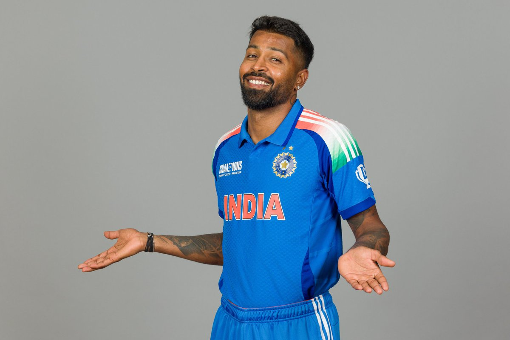

Hardik Pandya is one of India's best all-rounders. He is famous for his explosive batting, fast bowling, athletic fielding, and confident leadership. Hardik has played an important role for Mumbai Indians and the Indian cricket team by winning many important matches.
| Details | Information |
|---|---|
| Full Name | Hardik Himanshu Pandya |
| Date of Birth | 11 October 1993 |
| Birth Place | Surat, Gujarat, India |
| Nationality | Indian |
| Role | All-rounder |
| Batting Style | Right-Handed |
| Bowling Style | Right-arm Fast-Medium |
| Jersey Number | 33 |
| IPL Team | Mumbai Indians (MI) |
| Category | Record |
|---|---|
| Matches | 150+ |
| Runs | 2700+ |
| Highest Score | 91 |
| Wickets | 75+ |
| IPL Team | Mumbai Indians |
Hardik Pandya is one of the most exciting all-rounders in modern cricket. His aggressive batting, useful bowling, and energetic fielding make him a valuable player for both India and Mumbai Indians. His confidence, leadership, and fighting spirit continue to inspire young cricketers.